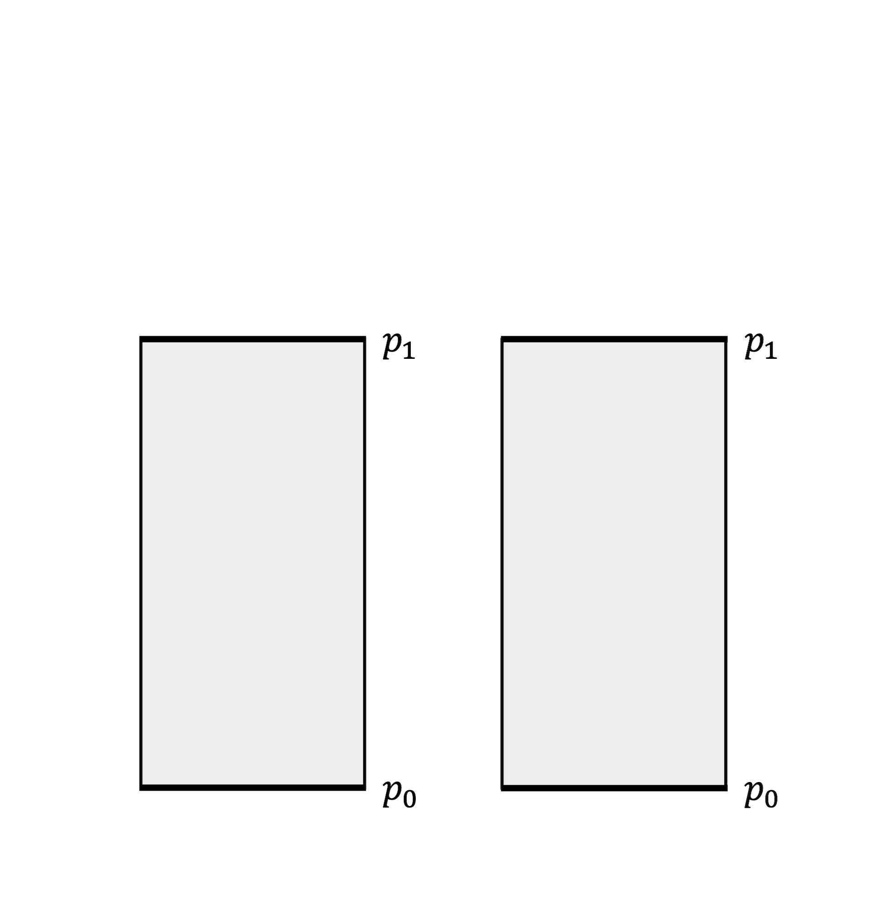
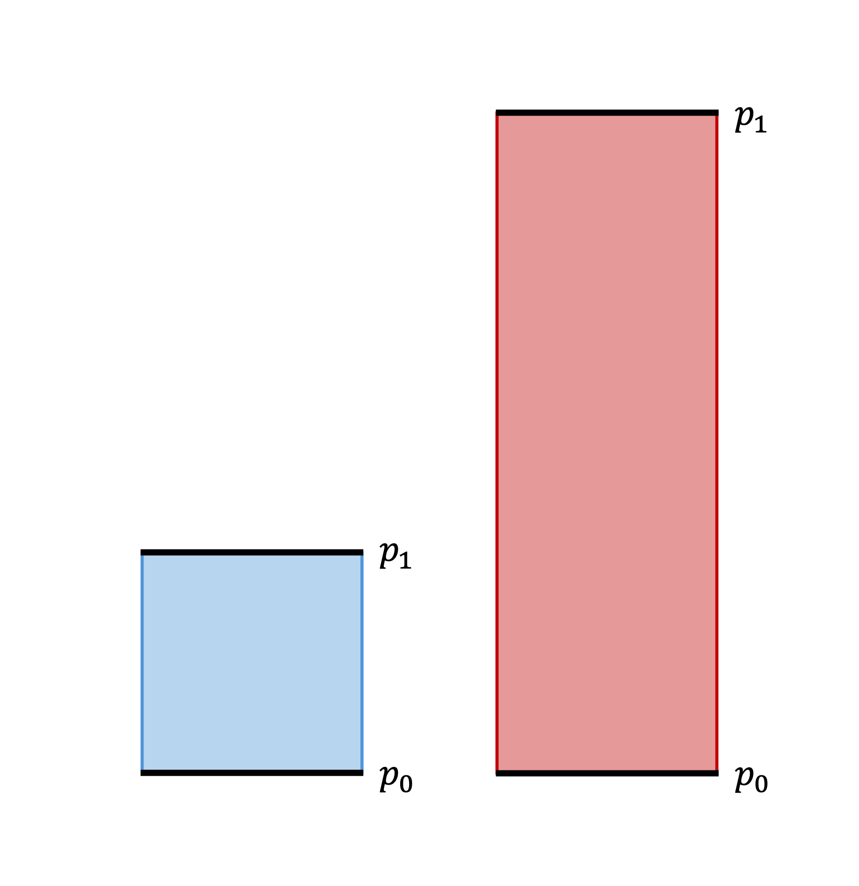
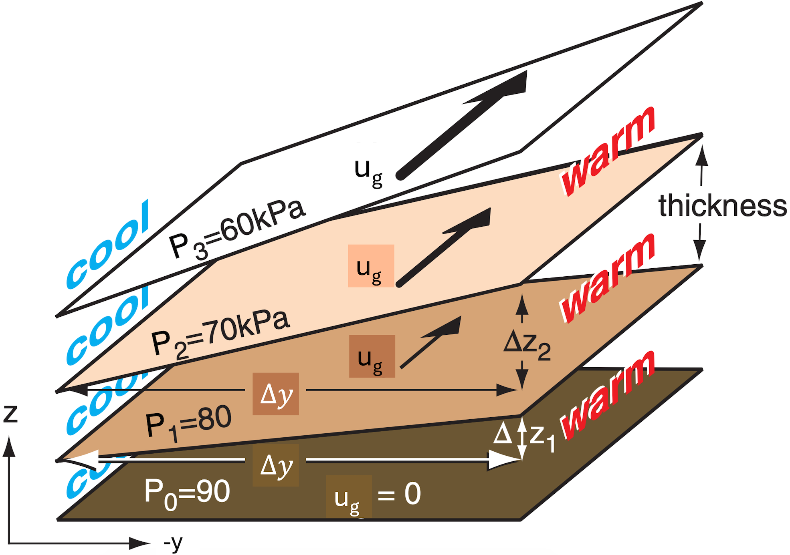

Section 10.1 Revisiting thickness
As we learned in Chapter 8, mid-latitude synoptic scale atmospheric motions are, to a first-order approximation, in geostrophic balance in the horizontal and in hydrostatic balance in the vertical. As we will learn in the current topic, the combination of these balances leads to an interesting and physically significant outcome for the vertical variation of the geostrophic wind when horizontal temperature gradients are present in Earth’s atmosphere.
Recall from Chapter 7 that the hypsometric equation (7.1.19) follows from the assumption of hydrostatic balance. It further follows that, since mid-latitude synoptic scale atmospheric motions are approximately in hydrostatic balance, the hypsometric equation can be used effectively to describe such motions.
The hypsometric equation states that the thickness of a column of air bounded between two pressure levels depends on the column’s average temperature \(\overline{T}\text{.}\) This is true whether thickness is measured using geometric height (\(\Delta z\)), geopotential (\(\Delta \Phi\)), or geopotential height (\(\Delta Z\)).
Consider two columns of perfectly dry air bounded below by pressure level \(p_0\) and above by pressure level \(p_1\text{,}\) where \(p_0 \gt p_1\text{.}\) For ease of visualization, we will consider \(p_0\) to be the surface pressure so the lower boundary of each column corresponds to the ground. Figure 10.1.1 below shows this scenario.
-
If these columns of air are identical in every way—composition, temperature, pressure, and consequently density—isobaric surfaces within them are found at the same heights, as shown in Figure 10.1.1(a) below for the isobaric surface corresponding to pressure level \(p_1\text{.}\)
-
If one of these columns of air is colder on average while the other column of air is warmer on average, the colder column compresses vertically while the warmer column expands vertically: Physically, this is because slower (faster) molecular motion within colder (warmer) column of air causes it to compress (expand) and thereby become denser (less dense) than otherwise identical warmer (colder) column of air.
-
Assuming the surface pressure \(p_0\) remains the same at the lower boundary of each column of air, the other isobaric surfaces within these columns will be found at lower (higher) heights within the colder (warmer) column of air, as shown in Figure 10.1.1(b)below for the isobaric surface corresponding to pressure level \(p_1\text{.}\) This result is consistent with the direct relationship between thickness and column-average temperature given by the hypsometric equation.
-
Let’s consider another isobaric surface corresponding to pressure level \(p_{\sfrac{1}{2}}\text{,}\) where the value \(p_{\sfrac{1}{2}}\) is halfway between the values \(p_0\) and \(p_1\) (i.e., \(p_{\sfrac{1}{2}}\) is the midpoint of \(p_0\) and \(p_1\text{,}\) so \(p_{\sfrac{1}{2}} = \dfrac{1}{2}(p_0 + p_1)\)), as shown in Figure 10.1.2 below. As expected, the isobaric surface corresponding to pressure level \(p_{\sfrac{1}{2}}\) is found at identical heights in the identical columns of air (Figure 10.1.2(a)), while it is found closer to (farther above) the surface in the colder (warmer) column of air (Figure 10.1.2(b)).
If we connect equal isobaric surfaces in these columns of air, as shown in Figure 10.1.3 below, a curious effect becomes apparent: The tilts of the isobaric surfaces connecting the colder and warmer columns of air increase with increasing height! This results because the column-average temperature is warmer in one column between each pair of pressure levels.
This effect is shown using three-dimensional isobaric surfaces and a gradual horizontal temperature gradient in Figure 10.1.4 below. In particular, Figure 10.1.4 depicts a meridional temperature gradient reflective of average tropospheric conditions in the Northern Hemisphere, with warmer air to the south in the tropics and colder air to the north in the polar regions. (A mirror image meridional temperature gradient is found on average in the troposphere in the Southern Hemisphere, with warmer air to the north in the tropics and colder air to the south in the polar regions.) The tilt of isobaric surfaces will continue to increase with increasing height until the meridional temperature gradient reverses direction, as happens at the tropopause.
The scenarios discussed above and visualized below demonstrate that a horizontal temperature gradient leads to geometric height, geopotential, and geopotential height gradients along isobaric surfaces. These in turn lead to a horizontal pressure gradient force directed toward lower geometric height, geopotential, and geopotential height values, consistent with (9.2.9)–(9.2.11) and (9.2.14)–(9.2.16). of Chapter 9.


